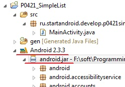
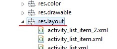
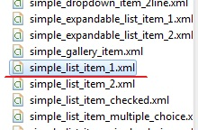
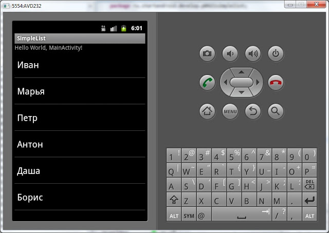
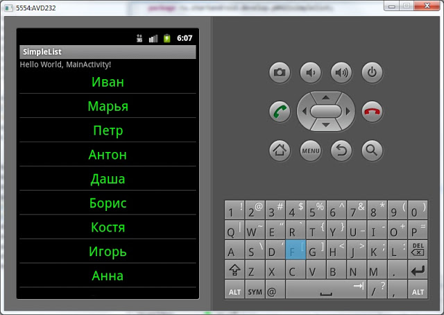

В этом уроке:
- используем ListView для построения списка
Перед тем, как начать говорить про компонент ListView, предлагаю вспомнить еще раз прошлый урок и механизм построения списка, который мы там использовали. Мы перебирали массив данных, в каждой итерации создавали пункт списка, заполняли его данными и помещали в список.
При создании ListView создавать пункты за нас будет адаптер. Адаптеру нужны от нас данные и layout-ресурс пункта списка. Далее мы присваиваем адаптер списку ListView. Список при построении запрашивает у адаптера пункты, адаптер их создает (используя данные и layout) и возвращает списку. В итоге мы видим готовый список.
Есть различные типы списков и адаптеров. Мы пока что рассмотрим простейший вариант.
Создадим проект:
Project name: P0421_SimpleList
Build Target: Android 4.0
Application name: SimpleList
Package name: ru.startandroid.develop.p0421simplelist
Create Activity: MainActivity
Открываем main.xml и добавим на экран компонент ListView (вкладка Composite):
<?xml version="1.0" encoding="utf-8"?>
<LinearLayout
xmlns:android="http://schemas.android.com/apk/res/android"
android:layout_width="fill_parent"
android:layout_height="fill_parent"
android:orientation="vertical">
<TextView
android:layout_width="fill_parent"
android:layout_height="wrap_content"
android:text="@string/hello">
</TextView>
<ListView
android:id="@+id/lvMain"
android:layout_width="match_parent"
android:layout_height="wrap_content">
</ListView>
</LinearLayout>ListView – это и есть компонент списка.
Теперь надо создать адаптер. Открываем MainActivity.java и пишем:
package ru.startandroid.develop.p0421simplelist;
import android.app.Activity;
import android.os.Bundle;
import android.widget.ArrayAdapter;
import android.widget.ListView;
public class MainActivity extends Activity {
String[] names = { "Иван", "Марья", "Петр", "Антон", "Даша", "Борис",
"Костя", "Игорь", "Анна", "Денис", "Андрей" };
/** Called when the activity is first created. */
public void onCreate(Bundle savedInstanceState) {
super.onCreate(savedInstanceState);
setContentView(R.layout.main);
// находим список
ListView lvMain = (ListView) findViewById(R.id.lvMain);
// создаем адаптер
ArrayAdapter<String> adapter = new ArrayAdapter<String>(this,
android.R.layout.simple_list_item_1, names);
// присваиваем адаптер списку
lvMain.setAdapter(adapter);
}
}Вы не поверите, но это весь код, необходимый для создания списка )
В качестве данных используем массив имен. В onCreate мы находим список, создаем адаптер и присваиваем адаптер списку. Давайте разберемся, как создали адаптер.
Мы использовали этот конструктор: public ArrayAdapter (Context context, int textViewResourceId, T[] objects)
и передали ему следующие параметры:
this – контекст
android.R.layout.simple_list_item_1 – это системный layout-файл, который представляет собой TextView
names – массив данных, которые мы хотим вывести в список
Мы можем посмотреть содержимое использованного simple_list_item_1. Для этого в вашем проекте найдите пункт Android 4.0., раскройте его, и раскройте android.jar

Проматывайте в самый низ и открывайте res.layout.

И внутри находим используемый нами simple_list_item_1

Двойной клик на него и смотрим содержимое:
<?xml version="1.0" encoding="utf-8"?>
<TextView
xmlns:android="http://schemas.android.com/apk/res/android"
android:id="@android:id/text1"
android:layout_width="match_parent"
android:layout_height="wrap_content"
android:textAppearance="?android:attr/textAppearanceLarge"
android:gravity="center_vertical"
android:paddingLeft="6dip"
android:minHeight="?android:attr/listPreferredItemHeight">
</TextView>Обычный TextView с набором параметров.
Когда список при формировании запрашивает очередной пункт, адаптер берет этот Layout-ресурс simple_list_item_1, прогоняет его через LayoutInflater и получает View, преобразует View к TextView, присваивает ему текст из массива данных и отдает списку.
Все сохраним и запустим. Видим список из наших данных.

Использование системного layout-ресурса simple_list_item_1 хорошо тем, что нам не надо самим layout рисовать. Однако, если нас не устраивает то, как выглядит список с использованием simple_list_item_1 в качестве пункта списка, мы можем создать свой layout-ресурс.
Создадим layout-файл my_list_item.xml в папке res/layout нашего проекта:
<?xml version="1.0" encoding="utf-8"?>
<TextView
xmlns:android="http://schemas.android.com/apk/res/android"
android:id="@+id/textView1"
android:layout_width="match_parent"
android:layout_height="wrap_content"
android:gravity="center_horizontal"
android:padding="5dp"
android:text="TextView"
android:textColor="#00FF00"
android:textSize="24sp">
</TextView>TextView с указанием цвета и размера шрифта, выравнивания текста и отступов.
Изменим существующий код, укажем адаптеру наш созданный layout-ресурс my_list_item:
// создаем адаптер
ArrayAdapter<String> adapter = new ArrayAdapter<String>(this,
R.layout.my_list_item,
names);Теперь адаптер будет использовать его при создании пунктов списка.
Все сохраним и запустим. Видим наш зеленый список:

В layout-ресурсе для пункта списка вместо TextView вы можете использовать какой-нибудь его производный класс – например Button. Главное, чтобы объект прошел преобразование к TextView. Адаптер присвоит ему текст методом setText и отдаст списку.
Немного про Context
На одном из прошлых уроков я говорил, что Context (контекст) используется для доступа к базовым функциям приложения. В этом уроке у нас получилось хорошее подтверждение этим словам.
ArrаyAdapter использует LayoutInflater, чтобы конвертнуть layout-ресурс в View. Но получение объекта LayoutInflater – это одна из базовых функций и она недоступна для класса ArrаyAdapter. Поэтому мы в ArrаyAdapter в качестве контекста передаем ссылку на Activity (Activity имеет доступ к базовым функциям через восходящую иерархию классов). А класс ArrayAdapter внутри себя использует переданный ему контекст, чтобы вызвать LayoutInflater. Без контекста он не смог бы это сделать.